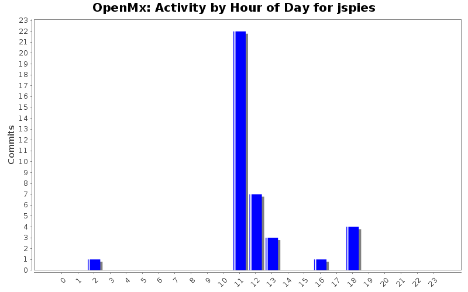
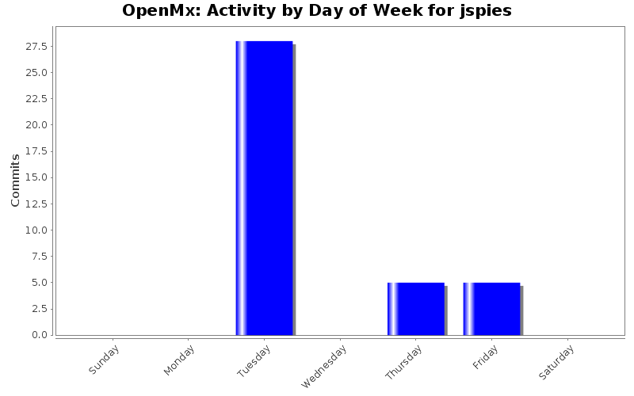
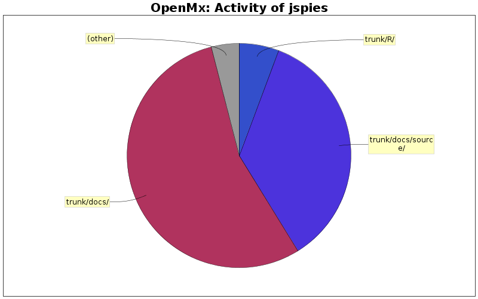

| Directory | Changes | Lines of Code | Lines per Change |
|---|---|---|---|
| Totals | 38 (100.0%) | 729 (100.0%) | 19.1 |
| trunk/docs/ | 16 (42.1%) | 400 (54.9%) | 25.0 |
| trunk/docs/source/ | 13 (34.2%) | 258 (35.4%) | 19.8 |
| trunk/R/ | 3 (7.9%) | 42 (5.8%) | 14.0 |
| trunk/ | 6 (15.8%) | 29 (4.0%) | 4.8 |

VERSION 0.1.2-708
3 lines of code changed in 3 files:
removed diag to MxMatrix
1 lines of code changed in 1 file:
added diag to MxMatrix
42 lines of code changed in 3 files:
fixed some warnings in docs
3 lines of code changed in 3 files:
Uploading the changes file
8 lines of code changed in 1 file:
Fixed some sphinx stuff in Ryne's doc
17 lines of code changed in 1 file:
Converted the CHANGES file to restructured text.
16 lines of code changed in 1 file:
Included CHANGES in Sphinx documentation
1 lines of code changed in 1 file:
More changes to the intro
4 lines of code changed in 1 file:
Made an intro chapter.
9 lines of code changed in 1 file:
oops
2 lines of code changed in 1 file:
Adding the Sphinx OpenMx documentation with seperate source and build directories.
414 lines of code changed in 6 files:
Backing out sphinx installation.
0 lines of code changed in 7 files:
Initial commit of Sphinx documentation directory.
200 lines of code changed in 7 files:
Added install info to README
9 lines of code changed in 1 file: